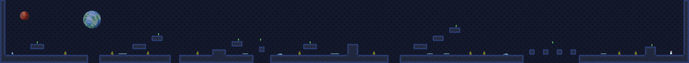
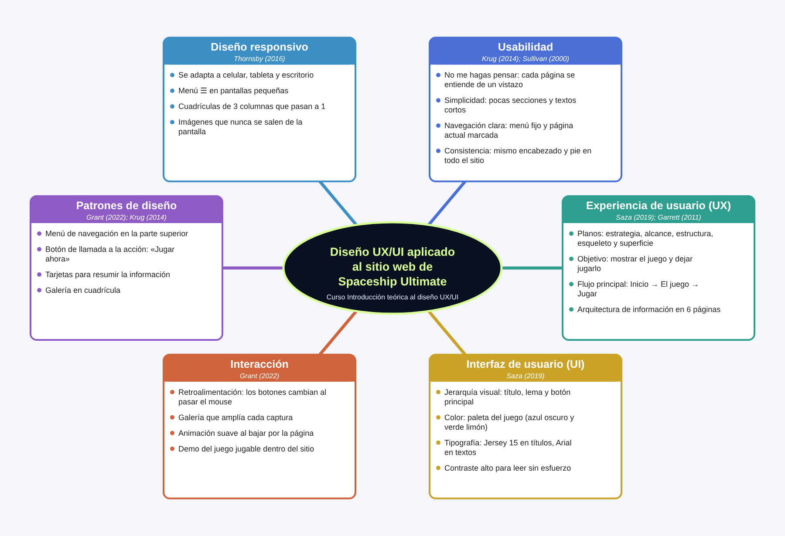
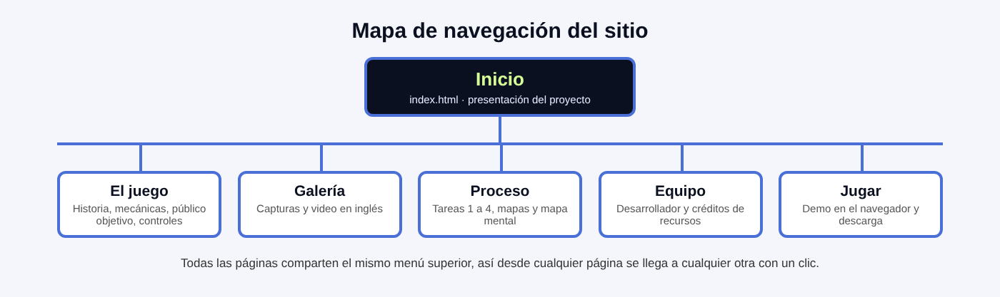
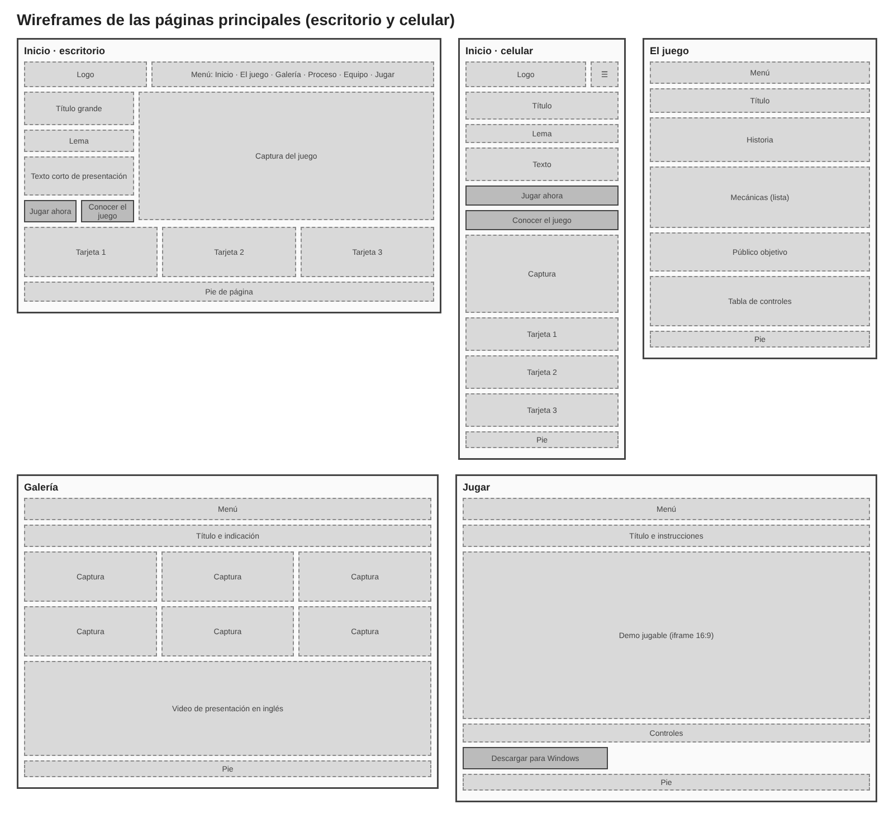

Proceso de desarrollo
El juego se hizo en cuatro etapas a lo largo del curso. Cada una partió de lo que dejó la anterior.
1. La idea
Tarea 1
Un mapa mental con los conceptos de diseño de juegos y la propuesta: género, público, mecánicas, historia y estilo visual. La idea inicial era una nave que recogía combustible entre planetas.
2. El prototipo y la prueba de usabilidad
Tarea 2
La idea se volvió un plataformero con un astronauta, hecho en Godot. Se evaluó con cinco heurísticas de Nielsen y con cinco jugadores externos. A todos les gustó, pero las partidas duraban menos de un minuto y cuatro de cinco pidieron más reto.
3. La demo mejorada
Tarea 3
Con esos resultados el nivel 1 pasó de 132 a 250 columnas, llegaron los puntos de control, el selector de dificultad, la flecha guía, la confirmación al salir y el nivel 2 con el droide. En Difícil aparecieron alienígenas que disparan y saltan, y cada vida pasó a aguantar dos golpes, con regreso al último punto de control al perderla. También se analizaron Celeste y Super Mario Bros. para que el juego fuera difícil sin ser frustrante.

Mapa completo del nivel 1 tomado del juego (desliza hacia los lados para verlo entero).
4. Este sitio web
Tarea 4
El sitio se planeó con un mapa mental de UX/UI, un mapa de navegación y wireframes de cada página. Usa los mismos colores y la misma fuente del juego, se adapta al celular y tiene la demo jugable.

Mapa mental de UX/UI que sirvió de base para diseñar el sitio.

Mapa de navegación: todas las páginas salen del menú superior.

Wireframes de las páginas principales en escritorio y celular.